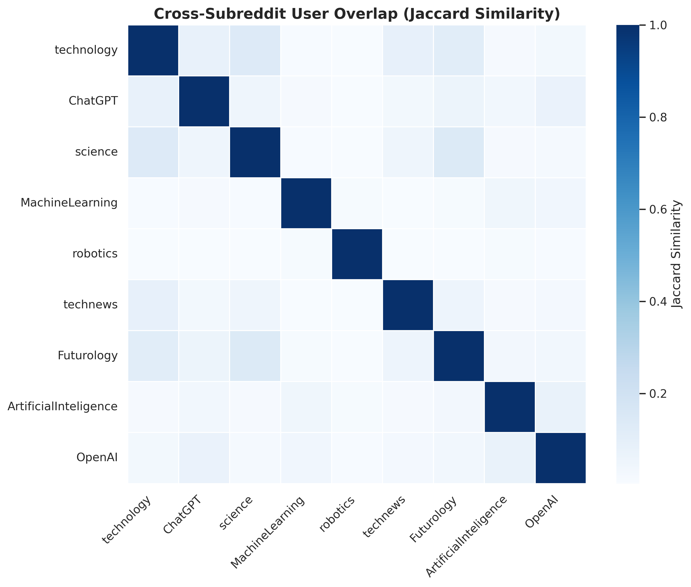

Exploratory Data Analysis
Community Dynamics and Engagement Patterns
Overview
This section presents a comprehensive exploratory data analysis (EDA) of user activity across 46 major AI and technology-focused subreddits from June 2023 to July 2024. By processing a large-scale dataset of over 12 million comments and 800,000 submissions with Spark and Python, we investigate four key business questions. Our analysis uncovers temporal activity patterns, quantifies user engagement and retention, measures attention inequality in discussions, and maps the landscape of cross-community user overlap. These findings provide a foundational understanding of the behavioral dynamics shaping the Reddit AI and technology ecosystem.
Dataset Summary
This project analyzes a large-scale Reddit dataset covering user activity from June 2023 to July 2024 across 46 unique subreddits, enabling a comprehensive examination of engagement patterns and community dynamics.
The dataset’s overall scope is detailed in Table 1. It comprises over 12.5 million comments and 831,000 submissions, providing a rich foundation for analyzing user-generated content and discussion patterns.
Dataset Summary by Data Type
| Data Type | Total Rows | Size (GB) | Date Range Start | Date Range End |
|---|---|---|---|---|
| comments | 12,561,291 | 12.56 | 2023-06-01 | 2024-07-31 |
| submissions | 831,021 | 0.83 | 2023-06-01 | 2024-07-31 |
Among the 46 communities, activity is highly concentrated in a few key subreddits. The top five, measured by the total number of comments and submissions, are:
- technology — 3,265,248 total rows
- ChatGPT — 1,894,755 total rows
- science — 1,051,336 total rows
- cscareerquestions — 974,990 total rows
- Futurology — 914,347 total rows
To facilitate temporal analysis, this raw data was aggregated into monthly activity counts. Table 2 provides a sample of this structured data, which is used to explore activity trends in Business Question 1.
Sample of Monthly Activity Data
| subreddit | month | posts | comments | total_activity |
|---|---|---|---|---|
| ArtificialInteligence | 2023-06-01 | 1900 | 11962 | 13862 |
| ArtificialInteligence | 2023-07-01 | 1829 | 12078 | 13907 |
| ArtificialInteligence | 2023-08-01 | 1759 | 9922 | 11681 |
| ChatGPT | 2023-06-01 | 11357 | 139633 | 150990 |
| ChatGPT | 2023-07-01 | 10597 | 142224 | 152821 |
| ChatGPT | 2023-08-01 | 10431 | 131996 | 142427 |
Business Question 1
How has community activity evolved across AI and technology subreddits over time?
Analysis Approach
To answer this, we aggregated the total number of posts and comments by subreddit for each month. This allowed us to create a time-series visualization that highlights activity trends, identifies periods of significant growth or decline, and compares the engagement trajectories of different communities. Surges in activity were then contextualized with major AI or technology events.
Findings

technologyconsistently dominates in overall activity, peaking above 300,000 monthly interactions and reflecting broad, sustained user interest.ChatGPTshows pronounced surges, especially around late 2023 and early 2024, which likely correspond to major product updates and public announcements (e.g., OpenAI DevDay).Futurologyexhibits a steady upward trend, suggesting growing mainstream interest in future-oriented and AI-related discussions.OpenAIexperiences sharp but short-lived spikes, consistent with event-driven engagement tied to specific releases or corporate news.- Smaller communities like
MachineLearningandArtificialInteligenceremain relatively stable, indicating a more niche and consistent user base.
Overall, activity patterns reveal that while major AI/tech events drive short-term spikes in specialized communities, broader technology interest maintains a high baseline of engagement throughout the year.
Business Question 2
Which AI-related subreddits demonstrate the strongest user engagement and retention over time?
Analysis Approach
We used Spark to compute a monthly returning-to-active user ratio for each subreddit. This metric serves as a proxy for user retention, measuring the proportion of a month’s active users who also participated in the previous month. A heatmap was then used to visualize these retention ratios, allowing for easy comparison of which communities maintain consistent user engagement over time.
Findings

- Niche communities show sharp fluctuations. Subreddits like
Alethicsexhibit periods of extremely high retention (ratios near 1.0), suggesting that when relevant topics emerge, nearly all active users are returning participants. However, this engagement is event-driven and not sustained. - Mainstream AI subreddits maintain stable retention. Larger communities like
ChatGPT,MachineLearningandOpenAIconsistently show retention ratios in the 0.2–0.4 range. This stability reflects a healthier, more durable engagement structure with a continuous flow of content and a steady user base. - General AI forums demonstrate stronger cohesion. Communities like
MachineLearningandOpenAIdo not show extreme highs but maintain a persistent core of recurring users, indicating a well-established community identity that encourages return visits even without major events.
In summary, the heatmap highlights a clear distinction: niche subreddits achieve high short-term engagement but lack consistency, whereas mainstream subreddits sustain steady returning-user activity, suggesting stronger community health and long-term value.
Business Question 3
How concentrated is attention within AI and tech discussions?
Analysis Approach
To measure attention inequality, we calculated the Gini coefficient of comments per post for each subreddit. A Gini coefficient near 1 indicates that a very small number of “viral” posts attract most of the comments, while a value closer to 0 suggests that attention is distributed more evenly across many posts. We visualized these distributions using violin plots and bar charts to compare concentration levels.
Findings


technologyandChatGPTexhibit the highest attention concentration, with average Gini coefficients approaching 0.90. This “winner-take-most” dynamic is typical of large, news-driven communities where engagement is dominated by a few highly viral posts.- Technical communities show lower inequality. Subreddits like
MachineLearninganddatasciencehave more moderate Gini values (≈0.70–0.78). This indicates a healthier, more evenly distributed engagement pattern where discussions are spread across a wider range of specialized, topic-focused posts rather than a few viral threads. OpenAIoccupies a middle ground, with moderate concentration levels but higher month-to-month variability, reflecting its sensitivity to event-driven news cycles.
These findings reveal a structural divide: general-interest subreddits are prone to viral, top-heavy discussions, while expert-focused communities foster a more equitable distribution of attention across multiple parallel conversations.
Business Question 4
Do AI and technology subreddits share overlapping user communities?
Analysis Approach
We identified the unique user bases for each subreddit and then computed the pairwise Jaccard similarity to quantify the degree of user overlap between every pair of communities. The resulting similarity matrix was visualized as a heatmap, where warmer colors would indicate a higher percentage of shared users.
Findings

- Overall user overlap is extremely low. The vast majority of Jaccard similarity scores are close to zero, indicating that the selected AI and technology subreddits attract largely distinct and separate audiences.
- Even closely related communities are siloed. For instance, AI-centric subreddits like
ChatGPT,OpenAI, andArtificialInteligencedo not share a significant user base. This suggests that users tend to engage with platform- or topic-specific communities rather than participating broadly across the AI ecosystem. - The strong diagonal pattern in the heatmap visually confirms that each subreddit functions as a relatively independent community with minimal cross-pollination of users during the observed period.
Summary
This exploratory analysis reveals several key dynamics of Reddit’s AI and technology ecosystem:
- Community Activity is Event-Driven: Monthly activity in specialized subreddits like
ChatGPTspikes in response to major industry events, while broader forums liketechnologymaintain high, consistent engagement. - Retention Varies by Community Type: Niche communities experience volatile but intense user retention, whereas larger, mainstream subreddits demonstrate more stable and durable long-term engagement.
- Attention is Highly Concentrated in Large Forums: General-interest tech subreddits exhibit a “winner-take-most” pattern where a few viral posts dominate discussion. In contrast, technical communities foster a more equitable distribution of attention.
- User Communities are Highly Siloed: There is minimal user overlap between different AI and tech subreddits, indicating that these online spaces operate as distinct communities with specialized audiences rather than an interconnected network.